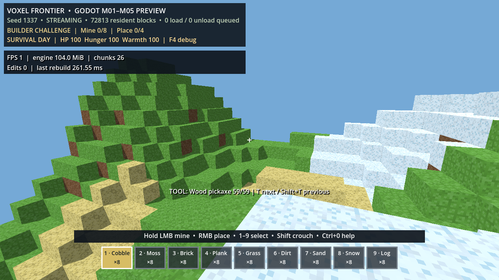

동작 계약
--streaming=on에서 3×3 수평 열만 상주- 전역 시드·X/Z로 생성: 방문 순서와 무관하게 같은 열 재현
- 경계 이동 때 해제 또는 적재를 열 하나씩 처리
- 블록 편집·상자·화로가 있는 열은 세션 중 고정
- 기존 16³ greedy 메시·충돌 렌더러를 그대로 사용
게임 플레이 증거

실제 렌더 창의 streaming=on 지상 월드. 상주 열 수는 성능 HUD/스모크에서 확인한다.
검증 및 측정
- 단위 65개 단언 통과: 결정성·좌표 경계·옵트인 실행·상주 링·증분 해제/적재·수정 열 고정
- 실제 VoxelWorld 스트리밍 스모크 4개 단언 통과: 상주 9열, 적재 12, 해제 3
- 마지막 열 작업 41.070ms (헤드리스 CPU; 화면 프레임/GPU 수치 아님)
40ms는 60Hz 프레임 예산 16.7ms를 넘는다. M07은 작동 증명이지 성능 완료가 아니다.
다음 M08
워커 열 생성, 예산화된 메인 스레드 커밋/메시 업로드, 30회 경계 왕복 P95, 무한 편집 저널의 재시작 복원을 종료 게이트로 둔다. 전역 랜드마크·스폰 동굴·Atlas·스트리밍 저장은 아직 보류다.